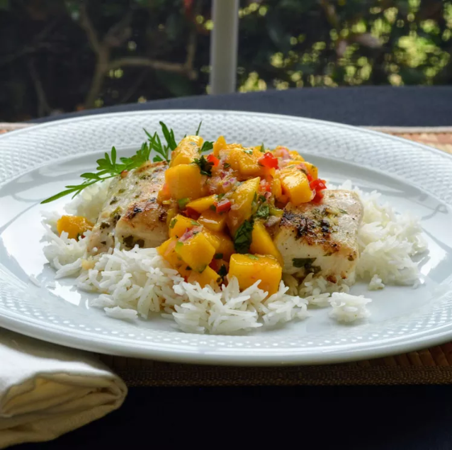

Grilled Tilapia with Mango Salsa
Home

Description
Who said it is not possible to enjoy your favorite fish with a side of vitamins?
Ingredients
Fish:
- Extra-virgin olive oil
- Lemon juice
- Minced fresh parsley
- Minced clove garlic
- Dried basil
- Ground black pepper
- Salt
- 2 Tilapia fillets
Salsa:
- 1 large ripe mango, peeled, pitted and diced
- Half red bell pepper, diced
- 1 jalapeno pepper, seeded and minced
- 2 tablespoons minced red onion
- 1 tablespoon chopped fresh cilantro
- 2 tablespoons lime juice
- 1 tablespoon lemon juice
- Salt and pepper to taste
Workflow
-
Prepare the fish:
Whisk together olive oil, lemon juice, parsley, garlic, basil, black pepper, and salt in a bowl and pour into a resealable plastic bag.
Add tilapia fillets, coat with the marinade, squeeze out excess air, and seal the bag.
Marinate in the refrigerator for 1 hour.
-
Meanwhile, make the salsa:
Combine mango, bell pepper, jalapeño pepper, red onion, and cilantro in a bowl.
Add lime and lemon juices and toss well.
Season to taste with salt and pepper.
Refrigerate until ready to serve.
-
Preheat an outdoor grill for medium-high heat and lightly oil the grate.
-
Remove tilapia from the marinade and shake off excess.
Discard remaining marinade.
Grill fillets until fish is no longer translucent in the center and flakes easily with a fork,
3 to 4 minutes per side, depending on the thickness of the fillets.
-
Serve tilapia topped with mango salsa.